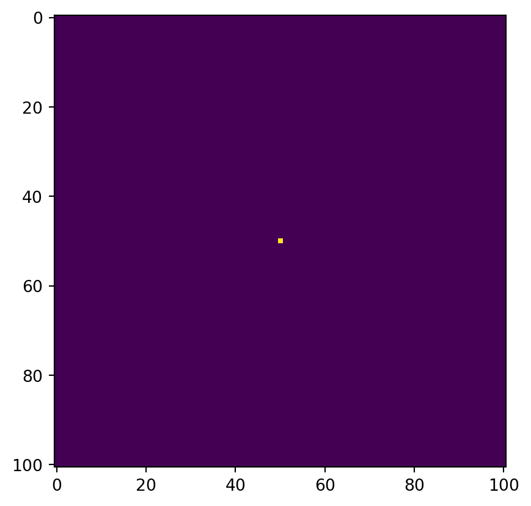
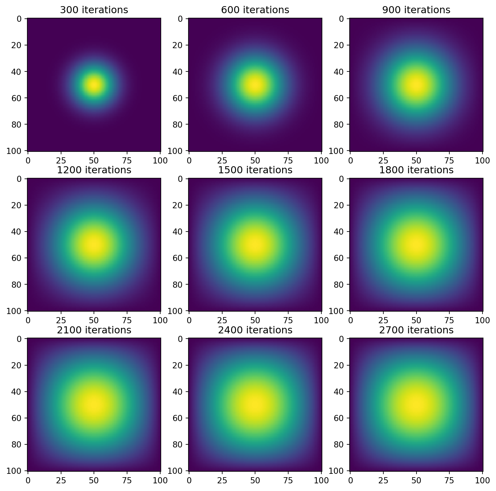

import numpy as np
from matplotlib import pyplot as plt
from jax.experimental import sparse
import jax.numpy as jnp
from jax import jitIntroduction
In this post, we will be modeling heat propogation through discretized models of a differential equation.
Initialization
First, let’s import all of the libraries that we will need for this project.
Then, let’s make the initial condition for our heat. This is one unit of heat directly in the center. Epsilon is used for us to increment discretely over time, and N is the dimension of our model.
N = 101
epsilon = 0.2
u0 = np.zeros((N,N))
u0[int(N/2), int(N/2)] = 1.0
plt.imshow(u0)
Simulation Functions
Now, this may seem a bit like putting the carriage before the horse, but I will introduce the functions that we will use to simulate and visualize our model.
Matrix-Vector Product Simulations
To visualize and model the heat distribution, our first two methods will use matrix-vector products to iterate over time. For these reasons, our simulation functions will have an input A which is the matrix we will use to iterate. The next_state function is what we will use to solve the next state in our simulation.
Our first function runs the simulation by itself for 2700 iterations.
def sim_matvecmul(A, next_state):
u = u0
for i in range(2700):
u = next_state(A, u, epsilon)This function is used to visualize how the simulation changes over time, giving us a figure with snapshots every 300 iterations.
def vis_matvecmul(A, next_state):
fig, ax = plt.subplots(3, 3, figsize = (10, 10))
u = u0
for i in range(2700):
u = next_state(A, u, epsilon)
if (i + 1) % 300 == 0:
ax_idx = ((i + 1) // 300) - 1
row = ax_idx // 3
col = ax_idx % 3
ax[row, col].imshow(u)
ax[row, col].set_title(f"{i+1} iterations")
plt.show()Direct Operation Simulations
Our next 2 strategies will solve the next state directly from the previous state by analyzing the surrounding points. For this reason, we don’t need to have a function that gets a matrix. As a result, these functions are similar to the previous ones.
def sim_direct(next_state):
u = u0
for i in range(2700):
u = next_state(u, epsilon)def vis_direct(next_state):
fig, ax = plt.subplots(3, 3, figsize = (10, 10))
u = u0
for i in range(2700):
u = next_state(u, epsilon)
if (i + 1) % 300 == 0:
ax_idx = ((i + 1) // 300) - 1
row = ax_idx // 3
col = ax_idx % 3
ax[row, col].imshow(u)
ax[row, col].set_title(f"{i+1} iterations")
plt.show()1. Matrix-Vector Multiplication
Our first simulation will be using simple matrix-vector multiplication to solve for the solution. Recall that we need a function to get our matrix, \(A\), as well as a function that returns our next step.
This function returns our matrix, and is defined this way to satisfy the differential equation we are modeling.
def get_A(N):
n = N * N
diagonals = [-4 * np.ones(n), np.ones(n-1), np.ones(n-1), np.ones(n-N), np.ones(n-N)]
diagonals[1][(N-1)::N] = 0
diagonals[2][(N-1)::N] = 0
A = np.diag(diagonals[0]) + np.diag(diagonals[1], 1) + np.diag(diagonals[2], -1) + np.diag(diagonals[3], N) + np.diag(diagonals[4], -N)
return AThis function returns the grid at the next time step.
def advance_time_matvecmul(A, u, epsilon):
N = u.shape[0]
u = u + epsilon * (A @ u.flatten()).reshape((N, N))
return uVisualization and Measurement
Now, let’s see what our simulation looks like and how long it takes. First, we get our matrix:
A = get_A(N)Then we use our visualization function.
vis_matvecmul(A=A, next_state=advance_time_matvecmul)
This will show us how long our code takes. This specific model takes a horribly long time, so we will see how to make it better later on.
%%timeit
sim_matvecmul(A=A, next_state=advance_time_matvecmul)On my machine, this gives me 1min 39s ± 6.51 s per loop (mean ± std. dev. of 7 runs, 1 loop each)
2. Sparse Matrices
Our next fastest way to simulate this differential equation is by implementing functions that utilize the fact that our matrices are mostly empty.
First, we define our matrix function:
def get_sparse_A(N):
A_sp_matrix = sparse.BCOO.fromdense(get_A(N))
return A_sp_matrixThen, we jit our next_state function so that it runs faster, as well.
jitted_advance_time_matvecmul = jit(advance_time_matvecmul)Visualization and Measurement
Again, we first get our matrix, but we now use our new function.
sparse_A = get_sparse_A(N)Then we visualize our data again. It should look the same
vis_matvecmul(A=sparse_A, next_state=jitted_advance_time_matvecmul)
Then we see just how much faster it is. Remember to run the jitted function so that it compiles before you test how fast it is.
%%timeit
sim_matvecmul(A=sparse_A, next_state=jitted_advance_time_matvecmul)On my machine, this yields 11.6 s ± 180 ms per loop (mean ± std. dev. of 7 runs, 1 loop each)
3. Direct Operations with Numpy
Now, instead of doing lots of matrix-vector multiplication, we will directly solve for the next state using the current state of the surrounding points. To do this, we end up adding the states of the points above, below, to the right, and to the left. Then, we subtract 4 times the state of the current point.
To execute this, we “pad” our grid to create space, and then use np.roll() to shift our grid up, down, left, and right. Since our boundary conditions let heat escape, we initialize them to zero.
def advance_time_numpy(u, epsilon):
N = u.shape[0]
# pad u so that we have room to move when we roll
u = np.append(np.zeros((1,N)), u, axis=0) # add first row
u = np.append(u, np.zeros((1, N)), axis=0) # add last row
u = np.append(np.zeros((N + 2,1)), u, axis=1) # add first col
u = np.append(u, np.zeros((N + 2,1)), axis=1) # add last col
# epsilon * (right + left + up + down - 4*self)
change = epsilon * (np.roll(u,1) + np.roll(u,-1) + np.roll(u,N+2) + np.roll(u,-(N+2)) - 4 * u)
return u[1:-1, 1:-1] + change[1:-1, 1:-1] # trim back to original shapeVisualization and Measurement
Now, we use our second set of simulation and visualization functions.
vis_direct(next_state=advance_time_numpy)
Let’s see how fast it is
%%timeit
sim_direct(next_state=advance_time_numpy)On my machine, this yields 365 ms ± 14.6 ms per loop (mean ± std. dev. of 7 runs, 1 loop each)
4. Direct Operations with Jax
Let’s re-implement our next_state function, but with jax. It will look almost identical. Don’t forget to jit it!
@jit
def advance_time_jax(u, epsilon):
N = u.shape[0]
u = jnp.append(np.zeros((1,N)), u, axis=0)
u = jnp.append(u, np.zeros((1, N)), axis=0)
u = jnp.append(np.zeros((N + 2,1)), u, axis=1)
u = jnp.append(u, np.zeros((N + 2,1)), axis=1)
change = epsilon * (jnp.roll(u,1) + jnp.roll(u,-1) + jnp.roll(u,N+2) + jnp.roll(u,-(N+2)) - 4 * u)
return u[1:-1, 1:-1] + change[1:-1, 1:-1] Visualization and Measurement
vis_direct(next_state=advance_time_jax)
Again, don’t forget to compile your function before timing it.
%%timeit
sim_direct(next_state=advance_time_jax)On my machine, I get 36 ms ± 2.82 ms per loop (mean ± std. dev. of 7 runs, 10 loops each)
5. Comparison
Implementation
I can see why the first two types of simulation could be better in some use cases, as simply multiplying a matrix by a vector to iterate is nice and simple. However, I found the latter two simulations to be the easiest to understand, especially with my intuition for heat dissipation. Naturally, heat would move in from the surrounding points and out of the central point, which makes that part of the calculation make sense. The rest is simply shuffling the matrix so that we can add it simply.
Speed
I want to acknowledge here that I didn’t actually run the timing code on this webpage, as that first simulation is insanely slow. The first observation is that these simulations are ordered such that the fastest simulation comes last.
We can see that our second simulation is about 10x faster than our first simulation (especially when considering the high standard deviation). After that, the third simulation is well over 100x faster than the first simulation (more than 200x, even), and the fourth simulation was the fastest overall, being about 10x faster than even the third simulation. As we can see, the jit-ing of the functions really goes a long way towards making the simulation go faster, and also that the alternate approach of direct operations can be very fast in some situations.